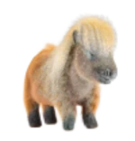
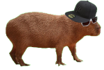
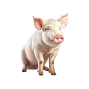
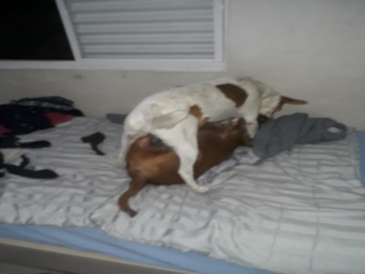

O rebaixado e roliço cachorro entrou em nossa família por volta de Outubro de 2018. Sua primeira ação como novo membro ao passar da porta e adentrar na residência foi correr atrás da nossa anciã pança😾. Mal sabia ele o problema que havia arranjado para a vida dele, mas isso é assunto para outro dia.
História do Joaquim
Apelidos do Joaquim
O pequeno barrigudo no decorrer de sua convivência com a família, teve diversos apelidos, sendo eles:
  Sobre o Joaquim
Joaquim tem um temperamento difícil, então ele facilmente perde a paciência com todo mundo, no começo foi difícil para o mesmo se aproximar de Molly, que implicava muito com o nosso bolota. Felizmente, depois um tempo o conflito se encerrou e viraram amigos inseparáveis. 🐶❤🐶
